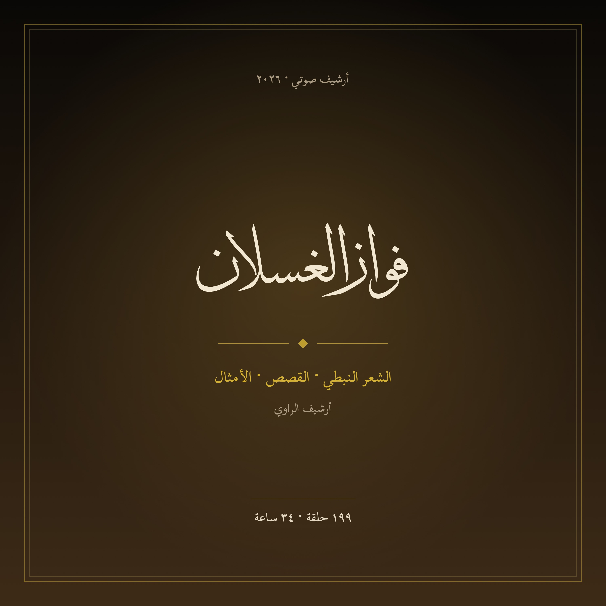
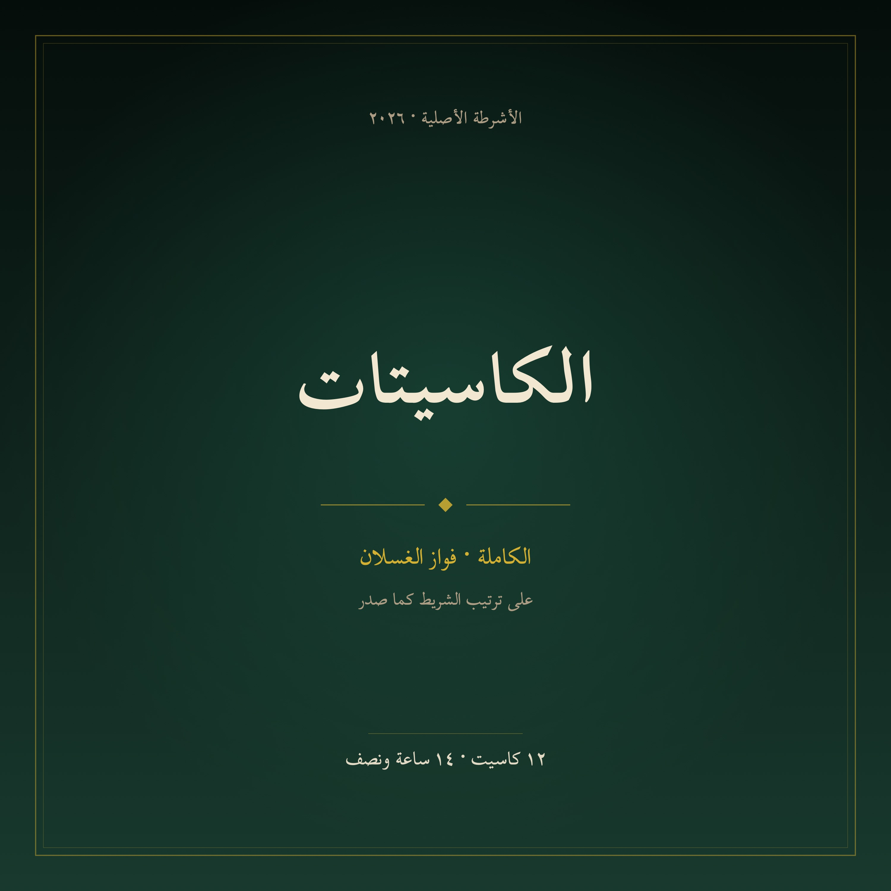

أرشيف صوتي · ٢٠٢٦
الراوي فواز الغسلان
قصص وقصائد وأمثال من التراث العربي، بصوت الراوي فواز الغسلان.

أرشيف الراوي فواز الغسلان
قصص وقصائد وأمثال من التراث العربي بصوت الراوي فواز الغسلان، مجموعة في عشر سلاسل مرتّبة.
https://itzfaisal.github.io/alrawie/feed.xml

فواز الغسلان — الكاسيتات الكاملة
اثنا عشر كاسيتًا كاملًا لتسجيلات الراوي فواز الغسلان، دون تقطيع، على ترتيب الشريط الأصلي.
https://itzfaisal.github.io/alrawie/kasayet/feed.xml
كيف تشترك؟
- انسخ رابط الاشتراك (Feed URL) من البطاقة أعلاه.
- في تطبيق البودكاست اختر «إضافة بودكاست عبر رابط» أو «Add by URL» والصق الرابط: Overcast، Pocket Casts، AntennaPod، Castro، Podverse…
- للاستظهار في دليل Apple Podcasts أو غيره، أرسل نفس الرابط مرة واحدة إلى Podcasts Connect.
- تحميل الملفات كاملةً (بدون بودكاست): صفحة الإصدارات.